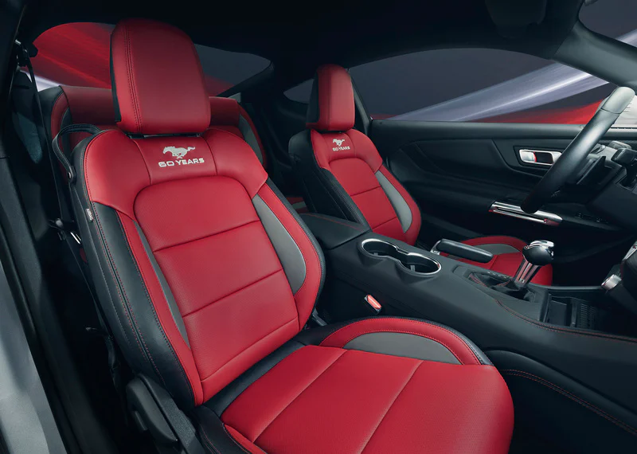

Ford doa Mustang GT Performance personalizado para a ONG Gerando Falcões
A Ford lançou em março passado a sétima geração Mustang GT Performance no Brasil, junto com as comemorações globais dos 60 anos do muscle car. Uma das ações para essas celebrações foi usar a primeira unidade importada do Mustang GT Performance, a única que veio na cor prata Orvalho, que não está à venda, e entregá-la ao designer Alan Mosca para fazer uma pintura especial com o tema. Com esta pintura, selecionariam uma ONG para doar o Mustang e ser leiloado. Um carro único e exclusivo. A Ford escolheu a Gerando Falcões, que atua no combate à pobreza em favelas. O Mustang customizado já está com os lances abertos em um leilão virtual e toda a renda será destinada à ONG.
